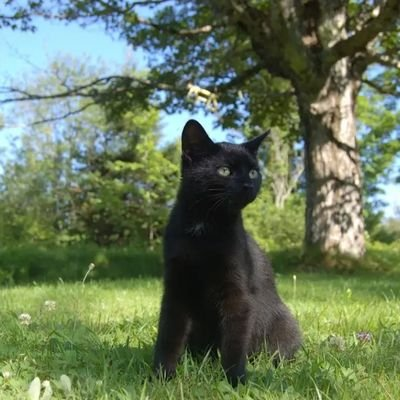

nønpolar
@nonpolar10
@Jellyfi77885103 相同的记号，相似的发音，但人们并不总是能够将它们同等机械地取用，它们总是在一种微妙的韵律或节奏中组织，符号与意向及感性经验的贯串。
符号的，需要恰当的宿主或共生物才能展开自身的生命过程，依赖这样的个体与群体实现差异化的再生产。
但感性并非永远优先于中介者，这取决于过程的组织方式。
nønpolar
@nonpolar10
@Jellyfi77885103 符号是一个中介环节，为了避免散逸，跨越某种距离，半流态的感觉被赋予了各异的边界。
像番茄罐头，相同的罐子与印花之下，每颗果实都有自身的历史，或其中有时也混入一些异物，甚至完全就是别的东西。
它们似无区分地被码放在记忆的架上，被投向未来与过去，也投向域外或某个遗忘的深处，而被撷取。